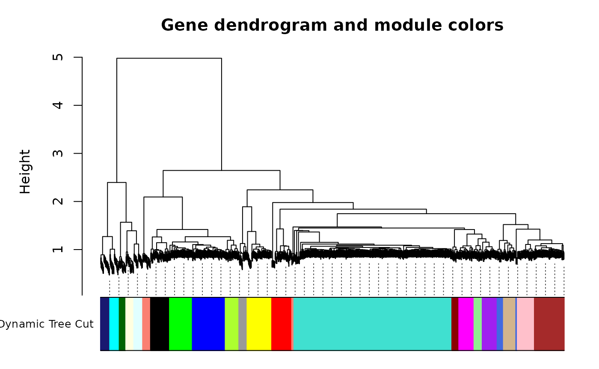
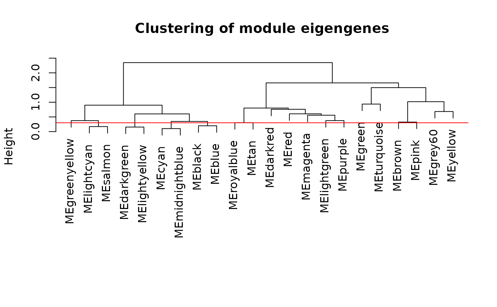
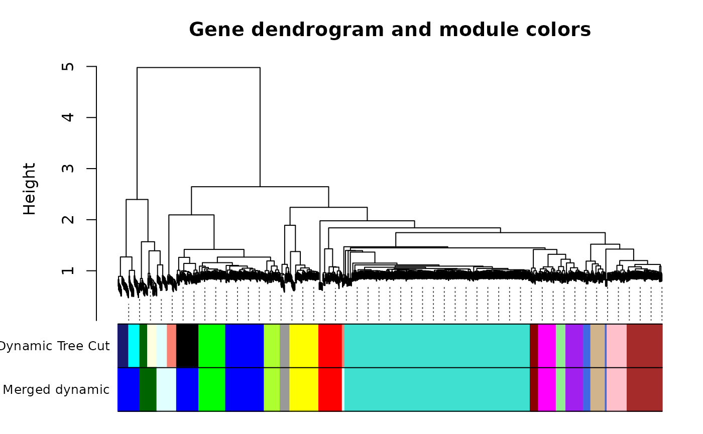

standardcor-WGCNA
standardcor-WGCNA.Rmd
suppressWarnings(library(standardcor))
#> Loading required package: qlcMatrix
#> Loading required package: Matrix
#> Loading required package: slam
#> Loading required package: sparsesvd
suppressWarnings(library(WGCNA))
#> Loading required package: dynamicTreeCut
#> Loading required package: fastcluster
#>
#> Attaching package: 'fastcluster'
#> The following object is masked from 'package:stats':
#>
#> hclust
#>
#>
#> Attaching package: 'WGCNA'
#> The following object is masked from 'package:stats':
#>
#> cor
suppressWarnings(library(tidyverse))
#> ── Attaching core tidyverse packages ──────────────────────── tidyverse 2.0.0 ──
#> ✔ dplyr 1.1.4 ✔ readr 2.1.5
#> ✔ forcats 1.0.0 ✔ stringr 1.5.1
#> ✔ ggplot2 3.5.1 ✔ tibble 3.2.1
#> ✔ lubridate 1.9.3 ✔ tidyr 1.3.1
#> ✔ purrr 1.0.2
#> ── Conflicts ────────────────────────────────────────── tidyverse_conflicts() ──
#> ✖ tidyr::expand() masks Matrix::expand()
#> ✖ dplyr::filter() masks stats::filter()
#> ✖ dplyr::lag() masks stats::lag()
#> ✖ purrr::none() masks qlcMatrix::none()
#> ✖ tidyr::pack() masks Matrix::pack()
#> ✖ tidyr::unpack() masks Matrix::unpack()
#> ℹ Use the conflicted package (<http://conflicted.r-lib.org/>) to force all conflicts to become errorsWGCNA, Integration of multi-omics
This notebook covers a correlation standardization technique (more information here: https://github.com/PriceLab/standardcor) to combine omics for a downstream WGCNA analysis. To combine omics, we start with correlations separately by each omics. Each omics tends to have a different distribution of correlations; for example, randomly selected analytes from a proteomics assay tends to be positively correlated (also true for transcriptomics), but randomly selected metabolites are typically closer to uncorrelated. This is not an issue when computing adjacencies for any of the single ‚Äôomics, because the transformation from correlations to adjacencies would (in WGCNA) be fit to each of these separate distributions separately. When we combine correlations across different ‚Äôomics, or between analytes measured in different ‚Äôomics experiments, WGCNA would attempt to find one power ùëò to fit them all, and that would result in very different distributions of adjacency for analyte pairs from different source experiments. One particular source of differences in distribution is sample size. If we compute correlations between metabolites from 1,000 individuals, we should expect much more accurate correlation values than if we compute them from only 10; sampling variation alone will result in a sqrt(1000/10) = 10-fold difference in variance!
We will therefore make a smooth model of the distribution of correlations of each type, and then transform the correlation values to a single, shared smooth model. While the resulting values are no longer interpretable as correlations, this will standardize the significance of correlations from different sources onto a single, shared significance scale. When WGCNA fits the values on this scale, it will be applying the same significance standards to all the correlations, regardless of their original source.
Data and preprocessing
The required input files are:
- Phenotype Table - containing the outcome of inPrimary Merest
- MetabolitPrimary e Table - metabolite abunda
- Lipid Table - Lipid abundance values
- Biogenic Amine Table - Biogenic Amine Tablence values
- Protein Table - protein abundance values
Data for this analysis were synthesized from Longevity Consortium generated proteomic and metabolomic data. We used a Gaussian Mixture Model (GMM) to create 1000 synthetic participants for each omic type, 500 cases and 500 controls, followed by the addition of a synthetic case/control signal. The signal was generated by adding 0.1 to a set of proteins and metabolites for all cases.
The original Longevity Consortium datasets were filtered for high missingness (>20%), imputed using random-forest imputation and log normalized prior to running GMM.
Load data
#Phenotypes
pheno <- read_delim("../data/WGCNA/case_synth.tsv", show_col_types = FALSE)
### Load proteins
prots <- read_delim("../data/WGCNA/proteins_synth.tsv", show_col_types = FALSE)
### Metabolites
lipids_df <- read_delim("../data/WGCNA/Lipids_synth.tsv", show_col_types = FALSE)
amines_df <- read_delim("../data/WGCNA/BA_synth.tsv", show_col_types = FALSE)
primary_df <- read_delim("../data/WGCNA/Primary_synth.tsv", show_col_types = FALSE)
### Metabolite features
features <- read_delim("../data/WGCNA/Met_Features.tsv", show_col_types = FALSE)
## Merge together
in_df <- merge(primary_df, lipids_df, by="subjectID")
in_df <- merge(in_df, amines_df, by="subjectID")
in_df <- merge(in_df, prots, by="subjectID")
# Check dimensions of each dataframe
dim(primary_df)
#> [1] 500 150
dim(lipids_df)
#> [1] 500 713
dim(amines_df)
#> [1] 500 322
dim(prots)
#> [1] 500 284
dim(in_df)
#> [1] 500 1466
dim(pheno)
#> [1] 500 2
# Drop id column and get features
num.analytes <- setdiff(unique(c(colnames(primary_df),colnames(lipids_df),colnames(amines_df),colnames(prots))),'subjectID')
num_df <- in_df[,colnames(in_df) %in% num.analytes]
num_df <- as.matrix(num_df)
rownames(num_df) <- in_df$subjectID
## Filter samples and features based on WGCNA NA criteria (50%)
gsg = goodSamplesGenes(num_df, verbose = 5);
#> Flagging genes and samples with too many missing values...
#> ..step 1
gsg$allOK
#> [1] TRUE
if (!gsg$allOK)
{
# Optionally, print the gene and sample names that were removed:
if (sum(!gsg$goodGenes)>0)
printFlush(paste("Removing genes:", paste(names(num_df)[!gsg$goodGenes], collapse = ", ")));
if (sum(!gsg$goodSamples)>0)
printFlush(paste("Removing samples:", paste(rownames(num_df)[!gsg$goodSamples], collapse = ", ")));
# Remove the offending genes and samples from the data:
num_df = num_df[gsg$goodSamples, gsg$goodGenes]
}
dim(num_df)
#> [1] 500 1465
# Get the names of remaining analytes overall (all.analytes) by category
cat.prots <- intersect(colnames(prots),colnames(num_df))
cat.primary <- intersect(colnames(primary_df),colnames(num_df))
cat.lipid <- intersect(colnames(lipids_df),colnames(num_df))
cat.amines <- intersect(colnames(amines_df),colnames(num_df))
all.analytes <- c(cat.prots,cat.primary,cat.lipid,cat.amines)
print(paste(length(cat.prots),length(cat.lipid),length(cat.primary),length(cat.amines),length(all.analytes)))
#> [1] "283 712 149 321 1465"
# We will construct a correlation matrix Z in parts corresponding to each category of analyte pairs.
n.analytes <- length(all.analytes)
# To compute correlations, features must be numeric. We will use Spearman
all_df <- num_df[,all.analytes]Generate Correlations
We use an implementation of sparse spearman correlation which saves memory and time. This helps to prevent the notebook from crashing! We use Spearman rank correlationsince it is not affected by scalar multiples or by log-transformation. More information on this technique can be found here: https://github.com/saketkc/blog/blob/main/2022-03-10/SparseSpearmanCorrelation2.ipynbs
s.prots <- as(all_df[,cat.prots], "sparseMatrix")
s.primary <- as(all_df[,cat.primary], "sparseMatrix")
s.lipid <- as(all_df[,cat.lipid], "sparseMatrix")
s.amines <- as(all_df[,cat.amines], "sparseMatrix")
# Within-category correlations
Z.pp <- SparseSpearmanCor2(s.prots)
Z.mm <- SparseSpearmanCor2(s.primary)
Z.ll <- SparseSpearmanCor2(s.lipid)
Z.aa <- SparseSpearmanCor2(s.amines)
# Cross-category correlations
Z.pm <- SparseSpearmanCor2(s.prots, s.primary)
Z.pl <- SparseSpearmanCor2(s.prots, s.lipid)
Z.pa <- SparseSpearmanCor2(s.prots, s.amines)
Z.ml <- SparseSpearmanCor2(s.primary, s.lipid)
Z.ma <- SparseSpearmanCor2(s.primary, s.amines)
Z.la <- SparseSpearmanCor2(s.lipid, s.amines)
# Add row and column names to each dataframe
dimnames(Z.pp) <- list(colnames(all_df[,cat.prots]), colnames(all_df[,cat.prots]))
dimnames(Z.mm) <- list(colnames(all_df[,cat.primary]), colnames(all_df[,cat.primary]))
dimnames(Z.ll) <- list(colnames(all_df[,cat.lipid]), colnames(all_df[,cat.lipid]))
dimnames(Z.aa) <- list(colnames(all_df[,cat.amines]), colnames(all_df[,cat.amines]))
dimnames(Z.pm) <- list(colnames(all_df[,cat.prots]), colnames(all_df[,cat.primary]))
dimnames(Z.pl) <- list(colnames(all_df[,cat.prots]), colnames(all_df[,cat.lipid]))
dimnames(Z.pa) <- list(colnames(all_df[,cat.prots]), colnames(all_df[,cat.amines]))
dimnames(Z.ml) <- list(colnames(all_df[,cat.primary]), colnames(all_df[,cat.lipid]))
dimnames(Z.ma) <- list(colnames(all_df[,cat.primary]), colnames(all_df[,cat.amines]))
dimnames(Z.la) <- list(colnames(all_df[,cat.lipid]), colnames(all_df[,cat.amines]))Within-category standarized distributions
Below we use the standardcor functions to estimate a Beta parameters from mean and std dev for each omic.
### Protein Protein
Z.unique <- Z.pp[row(Z.pp) < col(Z.pp)]
vw <- estimateShape(Z.pp)
v.pp <- vw[1]
w.pp <- vw[2]
print(paste("Protein pairs: rho_ij ~ Beta(v =",round(v.pp,3),",w =",round(w.pp,3),")"))
#> [1] "Protein pairs: rho_ij ~ Beta(v = 34.98 ,w = 34.002 )"
fine <- 40
Bs <- (c(-fine:(1+fine))-0.5)/fine
hist(Z.unique, breaks=Bs, xlab="Correlation", ylab="Density", ylim=c(0,4),
main="Pairwise protein correlations", prob=TRUE)
box()
abline(v=c(-1:1),lty=3)
r <- c(-fine:fine)/fine
lines(r, dbeta((1+r)/2, v.pp, w.pp)/2, lwd=3, col="MediumBlue")The blue line shows the model distrubtion. We can see it fits the background distribution. We will repeat this process for all other omics
### Metabolite-Metabolite
Z.unique <- as.vector(Z.mm[row(Z.mm) < col(Z.mm)])
vw <- estimateShape(Z.mm)
v.mm <- vw[1]
w.mm <- vw[2]
print(paste("Metabolite Pairs: rho_ij ~ Beta(v =",round(v.mm,3),",w =",round(w.mm,3),")"))
#> [1] "Metabolite Pairs: rho_ij ~ Beta(v = 98.489 ,w = 98.706 )"
fine <- 40
Bs <- (c(-fine:(1+fine))-0.5)/fine
hist(Z.unique, breaks=Bs, xlab="Correlation", ylab="Density", ylim=c(0,7.5),
main="Pairwise primary metabolite correlations", prob=TRUE)
box()
abline(v=c(-1:1),lty=3)
r <- c(-fine:fine)/fine
lines(r, dbeta((1+r)/2, v.mm, w.mm)/2, lwd=3, col="MediumBlue")
### Lipid - Lipid
Z.unique <- as.vector(Z.ll[row(Z.ll) < col(Z.ll)])
vw <- estimateShape(Z.ll)
v.ll <- vw[1]
w.ll <- vw[2]
print(paste("Lipid Pairs: rho_ij ~ Beta(v =",round(v.ll,3),",w =",round(w.ll,3),")"))
#> [1] "Lipid Pairs: rho_ij ~ Beta(v = 27.938 ,w = 25.131 )"
fine <- 40
Bs <- (c(-fine:(1+fine))-0.5)/fine
hist(Z.unique, breaks=Bs, xlab="Correlation", ylab="Density", ylim=c(0,7.5),
main="Pairwise lipid correlations", prob=TRUE)
box()
abline(v=c(-1:1),lty=3)
r <- c(-fine:fine)/fine
lines(r, dbeta((1+r)/2, v.ll, w.ll)/2, lwd=3, col="MediumBlue")
### Amine - Amine
Z.unique <- as.vector(Z.aa[row(Z.aa) < col(Z.aa)])
vw <- estimateShape(Z.aa)
v.aa <- vw[1]
w.aa <- vw[2]
print(paste("Amine Pairs: rho_ij ~ Beta(v =",round(vw[1],3),",w =",round(vw[2],3),")"))
#> [1] "Amine Pairs: rho_ij ~ Beta(v = 112.787 ,w = 109.907 )"
fine <- 40
Bs <- (c(-fine:(1+fine))-0.5)/fine
hist(Z.unique, breaks=Bs, xlab="Correlation", ylab="Density", ylim=c(0,7.5),
main="Pairwise amine correlations", prob=TRUE)
box()
abline(v=c(-1:1),lty=3)
r <- c(-fine:fine)/fine
lines(r, dbeta((1+r)/2, vw[1], vw[2])/2, lwd=3, col="MediumBlue")
Cross-category
We continue the same process for each of the cross-category omics combinations. consider.
dim(Z.pm)
#> [1] 283 149
Z.unique <- as.vector(Z.pm) # there are no self-comparisons, nor are there repeats due to symmetry
vw <- estimateShape(Z.pm)
v.pm <- vw[1]
w.pm <- vw[2]
print(paste("Protein-metabolite: rho_ij ~ Beta(v =",round(vw[1],3),",w =",round(vw[2],3),")"))
#> [1] "Protein-metabolite: rho_ij ~ Beta(v = 174.852 ,w = 173.513 )"
# The distribution of these cross-correlations is
# markedly narrower than either of the contributing 'omics
fine <- 40
Bs <- (c(-fine:(1+fine))-0.5)/fine
hist(Z.unique, breaks=Bs, xlab="Correlation", ylab="Density", ylim=c(0,7.5),
main="Pairwise Protein-metabolite correlations", prob=TRUE)
box()
abline(v=c(-1:1),lty=3)
r <- c(-fine:fine)/fine
lines(r, dbeta((1+r)/2, vw[1], vw[2])/2, lwd=3, col="MediumBlue")
# Modeling cross-category correlations: protein-lipid
Z.unique <- as.vector(Z.pl) # there are no self-comparisons, nor are there repeats due to symmetry
vw <- estimateShape(Z.pl)
v.pl <- vw[1]
w.pl <- vw[2]
print(paste("Protein-metabolite: rho_ij ~ Beta(v =",round(vw[1],3),",w =",round(vw[2],3),")"))
#> [1] "Protein-metabolite: rho_ij ~ Beta(v = 87.319 ,w = 89.012 )"
# The distribution of these cross-correlations is
# markedly narrower than either of the contributing 'omics
fine <- 40
Bs <- (c(-fine:(1+fine))-0.5)/fine
hist(Z.unique, breaks=Bs, xlab="Correlation", ylab="Density", ylim=c(0,7.5),
main="Pairwise Protein-metabolite correlations", prob=TRUE)
box()
abline(v=c(-1:1),lty=3)
r <- c(-fine:fine)/fine
lines(r, dbeta((1+r)/2, vw[1], vw[2])/2, lwd=3, col="MediumBlue")
# Modeling cross-category correlations: protein-amine
Z.unique <- as.vector(Z.pa) # there are no self-comparisons, nor are there repeats due to symmetry
vw <- estimateShape(Z.pa)
v.pa <- vw[1]
w.pa <- vw[2]
print(paste("Protein-metabolite: rho_ij ~ Beta(v =",round(vw[1],3),",w =",round(vw[2],3),")"))
#> [1] "Protein-metabolite: rho_ij ~ Beta(v = 136.503 ,w = 136.271 )"
# The distribution of these cross-correlations is
# markedly narrower than either of the contributing 'omics
fine <- 40
Bs <- (c(-fine:(1+fine))-0.5)/fine
hist(Z.unique, breaks=Bs, xlab="Correlation", ylab="Density", ylim=c(0,7.5),
main="Pairwise Protein-metabolite correlations", prob=TRUE)
box()
abline(v=c(-1:1),lty=3)
r <- c(-fine:fine)/fine
lines(r, dbeta((1+r)/2, vw[1], vw[2])/2, lwd=3, col="MediumBlue")
# Modeling cross-category correlations: primary-lipid
Z.unique <- as.vector(Z.ml) # there are no self-comparisons, nor are there repeats due to symmetry
vw <- estimateShape(Z.ml)
v.ml <- vw[1]
w.ml <- vw[2]
print(paste("Protein-lipid: rho_ij ~ Beta(v =",round(vw[1],3),",w =",round(vw[2],3),")"))
#> [1] "Protein-lipid: rho_ij ~ Beta(v = 184.501 ,w = 185.53 )"
# The distribution of these cross-correlations is
# markedly narrower than either of the contributing 'omics
fine <- 40
Bs <- (c(-fine:(1+fine))-0.5)/fine
hist(Z.unique, breaks=Bs, xlab="Correlation", ylab="Density", ylim=c(0,7.5),
main="Pairwise Protein-lipid correlations", prob=TRUE)
box()
abline(v=c(-1:1),lty=3)
r <- c(-fine:fine)/fine
lines(r, dbeta((1+r)/2, vw[1], vw[2])/2, lwd=3, col="MediumBlue")
# Modeling cross-category correlations: primary-amine
Z.unique <- as.vector(Z.ma) # there are no self-comparisons, nor are there repeats due to symmetry
vw <- estimateShape(Z.ma)
v.ma <- vw[1]
w.ma <- vw[2]
print(paste("Protein-amine: rho_ij ~ Beta(v =",round(vw[1],3),",w =",round(vw[2],3),")"))
#> [1] "Protein-amine: rho_ij ~ Beta(v = 184.687 ,w = 184.458 )"
# The distribution of these cross-correlations is
# markedly narrower than either of the contributing 'omics
fine <- 40
Bs <- (c(-fine:(1+fine))-0.5)/fine
hist(Z.unique, breaks=Bs, xlab="Correlation", ylab="Density", ylim=c(0,7.5),
main="Pairwise Protein-amine correlations", prob=TRUE)
box()
abline(v=c(-1:1),lty=3)
r <- c(-fine:fine)/fine
lines(r, dbeta((1+r)/2, vw[1], vw[2])/2, lwd=3, col="MediumBlue")
# Modeling cross-category correlations: lipid-amine
Z.unique <- as.vector(Z.la) # there are no self-comparisons, nor are there repeats due to symmetry
vw <- estimateShape(Z.la)
v.la <- vw[1]
w.la <- vw[2]
print(paste("Lipid-amine: rho_ij ~ Beta(v =",round(vw[1],3),",w =",round(vw[2],3),")"))
#> [1] "Lipid-amine: rho_ij ~ Beta(v = 125.539 ,w = 125.208 )"
# The distribution of these cross-correlations is
# markedly narrower than either of the contributing 'omics
fine <- 40
Bs <- (c(-fine:(1+fine))-0.5)/fine
hist(Z.unique, breaks=Bs, xlab="Correlation", ylab="Density", ylim=c(0,7.5),
main="Pairwise lipid-amine correlations", prob=TRUE)
box()
abline(v=c(-1:1),lty=3)
r <- c(-fine:fine)/fine
lines(r, dbeta((1+r)/2, vw[1], vw[2])/2, lwd=3, col="MediumBlue")
Merging correlations from disparate data subsets
This centering process is similar to, but not the same as “quantile normalization”. In quantile normalization, each value in the observed data has a cumulative probability among the observed data which, accounting for the possibility of ties in a finite dataset, is the average rank of all observed values equal to divided by the total number of observed values. The value is then transformed to the value with cumulative probability according to a normalizing probability distribution (i.e. ).
In this centering process, rather than using the rank of in the observed data, we use a null model of the observed data; is therefore a p-value for under the null model, and the transformed value has the same significance under the normalized probability distribution as had in the original null distribution. This allows us to merge datasets while retaining the significance they had in their original cohort. Only when the empirical distribution is used as the null model are these two processes the same.
Here, we use a beta distribution as a null model precisely because the appropriate null model for correlations of arbitrary independent vectors is, under some reasonable assumptions, indistinguishable from a Beta distribution. We believe this is a more appropriate null model of correlations, and suggest that the primary effect of this null model is to account for the effective number of dimensions in the observed data, prior to using a 2D geometric model to compute correlations between the observations.
nu.std <- 34 # As wide as the widest compoonent, and centered at 0
Zc.pp <- centerBeta(Z.pp, v.pp, w.pp, nu.std)
Zc.mm <- centerBeta(Z.mm, v.mm, w.mm, nu.std)
Zc.ll <- centerBeta(Z.ll, v.ll, w.ll, nu.std)
Zc.aa <- centerBeta(Z.aa, v.aa, w.aa, nu.std)
Zc.pm <- centerBeta(Z.pm, v.pm, w.pm, nu.std)
Zc.pl <- centerBeta(Z.pl, v.pl, w.pl, nu.std)
Zc.pa <- centerBeta(Z.pa, v.pa, w.pa, nu.std)
Zc.ml <- centerBeta(Z.ml, v.ml, w.ml, nu.std)
Zc.ma <- centerBeta(Z.ma, v.ma, w.ma, nu.std)
Zc.la <- centerBeta(Z.la, v.la, w.la, nu.std)
# Combined, centered correlations
Zc <- matrix(0, nrow = length(all.analytes),
ncol = length(all.analytes))
rownames(Zc) <- all.analytes
colnames(Zc) <- all.analytes
### Construct a final dataframe that contains all the correlation values.
###
# Block-structured correlation matrix
# Zc = [ PP PM PL PA |
# | PM^T MM ML MA |
# | PL^T MC^T LL LA |
# | PA^T MA^T LA^T AA ]
###
Zc[cat.prots, cat.prots] <- Zc.pp
Zc[cat.primary, cat.primary] <- Zc.mm
Zc[cat.lipid, cat.lipid] <- Zc.ll
Zc[cat.amines, cat.amines] <- Zc.aa
Zc[cat.prots, cat.primary] <- Zc.pm
Zc[cat.primary, cat.prots] <- t(Zc.pm)
Zc[cat.prots, cat.lipid] <- Zc.pl
Zc[cat.lipid, cat.prots] <- t(Zc.pl)
Zc[cat.prots, cat.amines] <- Zc.pa
Zc[cat.amines, cat.prots] <- t(Zc.pa)
Zc[cat.primary, cat.lipid] <- Zc.ml
Zc[cat.lipid, cat.primary] <- t(Zc.ml)
Zc[cat.primary, cat.amines] <- Zc.ma
Zc[cat.amines, cat.primary] <- t(Zc.ma)
Zc[cat.lipid, cat.amines] <- Zc.la
Zc[cat.amines, cat.lipid] <- t(Zc.la)
print(str_c("nrow: ", nrow(Zc)))
#> [1] "nrow: 1465"
Zc[1:5,1:5]
#> 1433Z A1AG2 A1AT A1BG A2AP
#> 1433Z 1.000000000 0.005707413 0.02901604 -0.006209182 -0.28999711
#> A1AG2 0.005707413 1.000000000 0.12406421 0.087104661 -0.17529426
#> A1AT 0.029016044 0.124064205 1.00000000 0.101222530 -0.29220877
#> A1BG -0.006209182 0.087104661 0.10122253 1.000000000 -0.03940435
#> A2AP -0.289997110 -0.175294264 -0.29220877 -0.039404352 1.00000000
Z.unique <- Zc[row(Zc) < col(Zc)]
print(paste("Target: rho_ij ~ Beta(v =",round(nu.std,3),",w =",round(nu.std,3),")"))
#> [1] "Target: rho_ij ~ Beta(v = 34 ,w = 34 )"
x <- (1+Z.unique)/2
mZ <- mean(x)
s2Z <- var(x)
v.c <- mZ*(mZ*(1-mZ)/s2Z - 1)
w.c <- (1-mZ)*(mZ*(1-mZ)/s2Z - 1)
print(paste("Method of moments: rho_ij ~ Beta(v =",round(v.c,3),",w =",round(w.c,3),")"))
#> [1] "Method of moments: rho_ij ~ Beta(v = 22.515 ,w = 21.686 )"
fine <- 100
Zc.unique <- as.vector(Zc[row(Zc) < col(Zc)])
Bs <- (c(-fine:(1+fine))-0.5)/fine
hist(Zc.unique, breaks=Bs, xlab="Correlation", ylab="Density", ylim=c(0,5),
main="All pairwise correlations, centered", prob=TRUE)
box()
abline(v=c(-1:1),lty=3)
r <- c(-fine:fine)/fine
lines(r, dbeta((1+r)/2, nu.std, nu.std)/2, lwd=3, col="orangered")
lines(r, dbeta((1+r)/2, v.c, w.c)/2, lwd=3, col="MediumBlue")
These are now standardized correlations. The mean and variance of this distribution suggest a model (shown in blue) that fits less well than the standardizing model (in orange); this is a consequence of the differences between the models we fitted and the empirical distributions, and indicates that the enrichment of high correlations we observed in the individual ’omics distributions has been preserved. If we had used quantile normalization, the overabundance of high correlations would have been shifted to lower correlation values, and the fitted blue model would be identical to the standardizing model.
WGCNA
The code below follows a standard WGCNA analysis. More information can be found here: https://peterlangfelder.com/2018/11/25/wgcna-resources-on-the-web/
#Manually convert the pairwise correlation DF to the signed network DF
Zc_signed <- 0.5 + 0.5 * Zc
print(str_c("nrow: ", nrow(Zc_signed)))
#> [1] "nrow: 1465"
#Choose a set of soft-thresholding powers
powers <- c(c(1:10), seq(from=11, to=15, by=1))
cutoff <- 0.8
#Call the network topology analysis function
sft <- pickSoftThreshold.fromSimilarity(Zc_signed, RsquaredCut=cutoff, powerVector=powers, blockSize=5000, verbose=5)
#> pickSoftThreshold: calculating connectivity for given powers...
#> ..working on genes 1 through 1465 of 1465
#> Warning: executing %dopar% sequentially: no parallel backend registered
#> Power SFT.R.sq slope truncated.R.sq mean.k. median.k. max.k.
#> 1 1 0.167000 12.400 0.944 746.00 745.000 806.0
#> 2 2 0.172000 5.280 0.950 388.00 385.000 459.0
#> 3 3 0.000524 0.143 0.772 206.00 202.000 276.0
#> 4 4 0.305000 -2.210 0.730 113.00 108.000 181.0
#> 5 5 0.705000 -2.770 0.816 63.10 58.700 126.0
#> 6 6 0.910000 -2.870 0.918 36.60 32.600 94.2
#> 7 7 0.957000 -2.590 0.948 22.00 18.300 74.3
#> 8 8 0.936000 -2.350 0.918 13.80 10.500 61.3
#> 9 9 0.963000 -2.060 0.952 9.15 6.140 52.5
#> 10 10 0.965000 -1.850 0.955 6.38 3.660 46.4
#> 11 11 0.960000 -1.710 0.948 4.70 2.250 41.9
#> 12 12 0.954000 -1.600 0.942 3.65 1.420 38.5
#> 13 13 0.963000 -1.500 0.955 2.97 0.895 35.9
#> 14 14 0.974000 -1.430 0.970 2.52 0.581 33.9
#> 15 15 0.963000 -1.390 0.957 2.21 0.380 32.4
#Plot the results
options(repr.plot.width=9, repr.plot.height=5)
par(mfrow=c(1,2))
cex1 <- 0.8
##Scale-free topology fit index as a function of the soft-thresholding power
plot(sft$fitIndices[,1], -sign(sft$fitIndices[,3])*sft$fitIndices[,2],
xlab="Soft Threshold (power)", ylab="Scale Free Topology Model Fit, signed R^2", type="n",
main=paste("Scale independence"))
text(sft$fitIndices[,1], -sign(sft$fitIndices[,3])*sft$fitIndices[,2],
labels=powers, cex=cex1, col="black")
##Line corresponds to using an R^2 cut-off of h
abline(h=cutoff, col="red")
##Mean connectivity as a function of the soft-thresholding power
plot(sft$fitIndices[,1], sft$fitIndices[,5],
xlab="Soft Threshold (power)", ylab="Mean Connectivity", type="n",
main=paste("Mean connectivity"))
text(sft$fitIndices[,1], sft$fitIndices[,5], labels=powers, cex=cex1, col="black")
print(str_c("Estimated soft-thresholding power: ", sft$powerEstimate))
#> [1] "Estimated soft-thresholding power: 6"
#Choose the power that best approximates a scale free topology while still maintaining high level of connectivity in the network
softPower <- sft$powerEstimate
softPower
#> [1] 6
#Generate the adjacency matrix using the chosen soft-thresholding power
adjacency <- adjacency.fromSimilarity(Zc, power=softPower, type="signed")
print(str_c("nrow: ", nrow(adjacency)))
#> [1] "nrow: 1465"
#head(adjacency)
#Turn adjacency into topological overlap
##You can input whatever matrix you want here!
# Turn adjacency into topological overlap
TOM = TOMsimilarity(adjacency,TOMType = "signed");
#> ..connectivity..
#> ..matrix multiplication (system BLAS)..
#> ..normalization..
#> ..done.
# Turn into distance matrix
dissTOM = 1-TOM
colnames(dissTOM) <- colnames(all_df)
rownames(dissTOM) <- colnames(dissTOM)
# Cluster the TOM distance matrix to find modules
# Can call whatever clusting method you want here
# Call the hierarchical clustering function
geneTree = hclust(as.dist(dissTOM), method = "ward.D2");
# Plot the resulting clustering tree (dendrogram)
#sizeGrWindow(12,9)
plot(geneTree, xlab="", sub="", main = "Gene clustering on TOM-based dissimilarity",
labels = FALSE, hang = 0.04);
box()
#Larger modules can be easier to interpret, so we set the minimum module size relatively high
minModuleSize <- max(c(20, round(ncol(all_df)/200, digits=0)))
print(str_c("minClusterSize = ", minModuleSize))
#> [1] "minClusterSize = 20"
#Module identification using dynamic tree cut
dynamicMods <- cutreeDynamic(dendro=geneTree, distM=dissTOM,
deepSplit=4, pamStage=TRUE, pamRespectsDendro=FALSE,
minClusterSize=minModuleSize)
#> ..cutHeight not given, setting it to 4.94 ===> 99% of the (truncated) height range in dendro.
#> ..done.
table(dynamicMods)
#> dynamicMods
#> 1 2 3 4 5 6 7 8 9 10 11 12 13 14 15 16 17 18 19 20
#> 499 104 94 78 72 63 60 54 48 47 43 39 32 30 29 28 26 26 25 25
#> 21 22
#> 22 21
#Convert numeric lables into colors
dynamicColors <- labels2colors(dynamicMods)
table(dynamicColors)
#> dynamicColors
#> black blue brown cyan darkgreen darkred
#> 60 104 94 30 21 22
#> green greenyellow grey60 lightcyan lightgreen lightyellow
#> 72 43 26 28 26 25
#> magenta midnightblue pink purple red royalblue
#> 48 29 54 47 63 25
#> salmon tan turquoise yellow
#> 32 39 499 78
#Plot the dendrogram and colors underneath
options(repr.plot.width=12, repr.plot.height=6)
plotDendroAndColors(geneTree, dynamicColors, "Dynamic Tree Cut",
dendroLabels=FALSE, hang=0.03,
addGuide=TRUE, guideHang=0.05,
main="Gene dendrogram and module colors")
#Calculate eigengenes
MEList <- moduleEigengenes(all_df, colors=dynamicColors, impute=TRUE, nPC=2)
MEs <- MEList$eigengenes
print(str_c("nrow: ", nrow(MEs)))
#> [1] "nrow: 500"
head(MEs)
#> MEblack MEblue MEbrown MEcyan MEdarkgreen MEdarkred
#> 1 -0.04250164 -0.006137058 -0.061119212 -0.017963073 0.083685677 2.766099e-02
#> 2 0.07743639 0.062143054 -0.024485473 0.030683603 -0.021758338 -4.796828e-05
#> 3 0.03539161 0.026002054 -0.073829551 0.011904043 0.006682852 2.677434e-02
#> 4 -0.01816194 -0.021918239 0.006197687 -0.005365383 -0.030132389 1.233884e-02
#> 5 0.01788601 0.014131597 -0.090108419 0.041251157 0.012587136 -6.189113e-02
#> 6 0.02603770 0.001758729 -0.043114754 0.024930105 0.001555772 -1.455030e-02
#> MEgreen MEgreenyellow MEgrey60 MElightcyan MElightgreen
#> 1 0.09667654 0.04224804 -0.011219413 0.02270412 -0.0009493078
#> 2 0.01144213 0.06930301 0.011247960 0.03394327 0.0926655585
#> 3 0.03526924 0.04939254 0.005733386 0.02926117 0.0418565133
#> 4 -0.02069531 0.02095189 0.032070655 -0.00474506 -0.0296049856
#> 5 0.06652515 -0.01577464 -0.105567516 0.02761338 0.0080213115
#> 6 0.06117528 0.01558672 -0.039090274 0.02622454 -0.0552738630
#> MElightyellow MEmagenta MEmidnightblue MEpink MEpurple
#> 1 0.054813453 0.017014383 -0.060639183 -0.041704707 0.015084532
#> 2 0.006505377 0.021206367 0.041181322 0.016637743 0.070252083
#> 3 0.028960827 0.004705876 -0.013260868 -0.049713898 0.067356769
#> 4 0.010579150 0.037737960 -0.009881932 0.001515955 -0.039509676
#> 5 0.012931648 -0.018482246 0.068292959 -0.094043994 -0.038940804
#> 6 -0.021155760 0.039405631 0.053630301 -0.039897490 0.002201621
#> MEred MEroyalblue MEsalmon MEtan MEturquoise MEyellow
#> 1 0.004533408 0.056728907 0.01880385 0.0104194410 -0.03167811 -0.007773314
#> 2 0.022852213 -0.027008752 0.04014007 -0.0451096975 0.01457797 -0.013980877
#> 3 0.065539735 0.034050318 0.03833421 -0.0105466068 -0.05322893 -0.037205440
#> 4 0.005094828 0.003775484 0.01594035 -0.0039805473 0.01949922 -0.013305095
#> 5 -0.056656398 -0.091232433 0.01890705 -0.0649936854 -0.02318406 -0.118914485
#> 6 0.055026948 -0.008089793 0.04426588 -0.0002465442 -0.06392858 -0.075245659
#Calculate dissimilarity of module eigengenes
MEDiss <- 1 - cor(MEs, use="pairwise.complete.obs")
#Cluster module eigengenes
METree <- hclust(as.dist(MEDiss), method="ward.D2")
#Plot the result
options(repr.plot.width=10, repr.plot.height=5)
plot(METree, main="Clustering of module eigengenes",
xlab="", sub="")
MEDissThres <- 0.3
abline(h=MEDissThres, col="red")
#Call an automatic merging function
merge <- mergeCloseModules(all_df, dynamicColors, cutHeight=MEDissThres, verbose=0)
#Eigengenes of the new merged modules
mergedMEs <- merge$newMEs
#The merged module colors
mergedColors <- merge$colors
table(mergedColors)
#> mergedColors
#> blue brown darkgreen darkred green greenyellow
#> 223 94 46 22 72 43
#> grey60 lightcyan lightgreen magenta pink purple
#> 26 60 26 48 54 47
#> red royalblue tan turquoise yellow
#> 63 25 39 499 78
#Plot the dendrogram and module colors
options(repr.plot.width=12, repr.plot.height=6)
plotDendroAndColors(geneTree, cbind(dynamicColors, mergedColors),
c("Dynamic Tree Cut", "Merged dynamic"),
dendroLabels=FALSE, hang=0.03,
addGuide=TRUE, guideHang=0.05,
main="Gene dendrogram and module colors")
#Rename
moduleColors <- mergedColors
MEs <- mergedMEs
#Rename
moduleColors <- mergedColors
MEs <- mergedMEs
#Clean the module eigengene table
eigengene_df <- MEs %>%
rownames_to_column(var="public_client_id")
names(eigengene_df)[2:ncol(eigengene_df)] <- names(eigengene_df)[2:ncol(eigengene_df)] %>%
str_replace(., "^ME", "") %>%
str_to_title(.)
print("Module eigengene table")
#> [1] "Module eigengene table"
print(str_c("- nrow: ", nrow(eigengene_df)))
#> [1] "- nrow: 500"
head(eigengene_df)
#> public_client_id Green Turquoise Greenyellow Lightcyan Blue
#> 1 1 0.09667654 -0.03167811 0.04224804 0.021016558 -0.03960362
#> 2 2 0.01144213 0.01457797 0.06930301 0.038385247 0.05453270
#> 3 3 0.03526924 -0.05322893 0.04939254 0.035184316 0.01207804
#> 4 4 -0.02069531 0.01949922 0.02095189 0.005809384 -0.01353862
#> 5 5 0.06652515 -0.02318406 -0.01577464 0.024391282 0.04479661
#> 6 6 0.06117528 -0.06392858 0.01558672 0.038461457 0.03384631
#> Darkgreen Darkred Royalblue Tan Red
#> 1 0.072203330 2.766099e-02 0.056728907 0.0104194410 0.004533408
#> 2 -0.007447819 -4.796828e-05 -0.027008752 -0.0451096975 0.022852213
#> 3 0.018880591 2.677434e-02 0.034050318 -0.0105466068 0.065539735
#> 4 -0.009537316 1.233884e-02 0.003775484 -0.0039805473 0.005094828
#> 5 0.013223197 -6.189113e-02 -0.091232433 -0.0649936854 -0.056656398
#> 6 -0.010730048 -1.455030e-02 -0.008089793 -0.0002465442 0.055026948
#> Magenta Lightgreen Purple Brown Pink
#> 1 0.017014383 -0.0009493078 0.015084532 -0.061119212 -0.041704707
#> 2 0.021206367 0.0926655585 0.070252083 -0.024485473 0.016637743
#> 3 0.004705876 0.0418565133 0.067356769 -0.073829551 -0.049713898
#> 4 0.037737960 -0.0296049856 -0.039509676 0.006197687 0.001515955
#> 5 -0.018482246 0.0080213115 -0.038940804 -0.090108419 -0.094043994
#> 6 0.039405631 -0.0552738630 0.002201621 -0.043114754 -0.039897490
#> Grey60 Yellow
#> 1 -0.011219413 -0.007773314
#> 2 0.011247960 -0.013980877
#> 3 0.005733386 -0.037205440
#> 4 0.032070655 -0.013305095
#> 5 -0.105567516 -0.118914485
#> 6 -0.039090274 -0.075245659
##Sample metadata
sample_tbl <- pheno[pheno$subjectID %in% rownames(MEs),]
print("Sample metadata after the filter")
#> [1] "Sample metadata after the filter"
print(str_c("- nrow: ", nrow(sample_tbl)))
#> [1] "- nrow: 500"
#Code sex and race
phenotype_tbl <- sample_tbl
phenotype_tbl <- phenotype_tbl[match(rownames(MEs), rownames(phenotype_tbl)),]
#Calculate the numbers of modules and samples
#nModules <- ncol(MEs)
nSamples <- nrow(phenotype_tbl)
#Names (colors) of the modules
modNames = substring(names(MEs), 3)
##Check ID order before the cor() function
print(str_c("Matched IDs?: ", all(rownames(MEs)==rownames(phenotype_tbl))))
#> [1] "Matched IDs?: TRUE"
#Calculate module–trait relationship
moduleTraitCor <- as.data.frame(cor(MEs, phenotype_tbl, use="p"))
rownames(moduleTraitCor) <- str_to_title(modNames)
print("Module–trait relationship table")
#> [1] "Module–trait relationship table"
print(str_c("nrow: ", nrow(moduleTraitCor)))
#> [1] "nrow: 17"
#Calculate statisitcal significance of module–trait relationship
MTRpval <- as.data.frame(corPvalueStudent(as.matrix(moduleTraitCor), nSamples))
rownames(MTRpval) <- str_to_title(modNames)
print("Module–trait relationship p-value table")
#> [1] "Module–trait relationship p-value table"
print(str_c("- nrow: ", nrow(MTRpval)))
#> [1] "- nrow: 17"
#Eliminate the dummy module (Grey)
moduleTraitCor <- moduleTraitCor[rownames(moduleTraitCor)!="Grey",]
MTRpval <- MTRpval[rownames(MTRpval)!="Grey",]
#P-value adjustment across modules (per trait) using Benjamini–Hochberg method
MTRpval_adj <- as.data.frame(apply(MTRpval, 2, function(x){p.adjust(x, length(x), method="BH")}))
print("Module–trait relationship adjusted p-value table")
#> [1] "Module–trait relationship adjusted p-value table"
print(str_c("- nrow: ", nrow(MTRpval_adj)))
#> [1] "- nrow: 17"
#Prepare text labels as matrix
textMatrix <- paste("r = ",signif(as.matrix(moduleTraitCor), 3),"\n(P = ",
signif(as.matrix(MTRpval_adj), 2),")", sep="")
dim(textMatrix) <- dim(moduleTraitCor)
#Revert module names back to apply color conversion
temp_c <- rownames(moduleTraitCor) %>%
str_to_lower(.) %>%
str_c("ME",.)
#Visualize
options(repr.plot.width=10, repr.plot.height=10)
par(mar=c(5, 5, 3, 2))
labeledHeatmap(Matrix=moduleTraitCor,
xLabels=colnames(moduleTraitCor),
yLabels=temp_c,
#ySymbols=rownames(moduleTraitCor),
colorLabels=FALSE,
colors=blueWhiteRed(50),
textMatrix=textMatrix,
setStdMargins=FALSE,
cex.text=1,
zlim=c(-1,1),
main=paste("Module–trait relationships"))
Now that we have identified modules asssociated with a phenotype, we can take the analysis in many other directions. Please refer to the WGCNA documentation for more information.